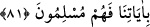

âyetlerden istifâdeleri olmadığından dolayıdır. Burada kasdedilen, onların kalpleri
mühürlenmiş kimseler olduklarıdır. Dolayısıyla artık onların kalplerinde bulunan küfür
çıkmaz ve orada hiç bulunmamış olan îman da oraya giremez.
Eğer: “Onların ölülere benzetilmesinden sonra aşağıda görüleceği üzere kör ve
sağırlara benzetilmesinin fazla bir faydası açıkça görülmüyor” dersen, şöyle cevap
veririm: “Allah onların kalblerini mühürlemiştir.” (el-Bakara, 2/6) âyetinde işâret
edildiği gibi kasdedilen, kendilerinin değil kalblerinin benzetilmesidir. Çünkü insan,
küfür, nifak, dünya sevgisi ve benzerleri ile kalbinin ölümüyle ölü hükmünde olur.
Kalpleri ölmüş olan kâfirler senin sözünü anlayamazlar.
Yahyâ b. Muâz (r.h.) der ki: “Ârif-i billah olanlar/Allah’ı tanıyanlar diridirler,
başkaları ise ölülerdir. Çünkü ruhun hayatı, ancak hakîkî ma’rifet iledir.
Keşfü’l-esrâr’da der ki: “Hakikatte dirilik, hayat üç şeydir. Bu üç şeyden boş olan bir
kalp/gönül ölülerden sayılır. Bunlar: İlimle birlikte korku olan dirilik/hayat. İlimle
birlikte ümit olan dirilik/hayat. İlimle birlikte dostluk olan dirilik/hayat.
Korku ile olan dirilik, insanın eteğini temiz, gözünü uyanık ve yolunu doğru tutar. Ümit
ile olan dirilik, binitini hızlı, ağzını tam ve yolunu yakın eder. Dostluk ile olan dirilik
ise, kişinin kadrini yüce, başını âzâd ve gönlünü şad kılar. İlimsiz korku, Haricîlerin
korkusudur. İlimsiz ümit, Mürcie mezhebine mensup olanların ümididir. İlimsiz dostluk,
İbâhîler’in dostluğudur. Kimde bu üç haslet ilimle birlikte bulunursa, temiz bir hayata
kavuşur ve ölümden de kurtulur.”
“Arkalarını dönüp giderlerken” hakkı arkalarında bırakarak yüz çevirdikleri halde
ondan uzaklaşırlarken “sağırlara da dâveti” yâni herhangi bir işe çağrıyı
“duyuramazsın.”
“__WORD__ işitme duyusunu kaybetmek demek olan “__WORD__in çoğuludur. Burada olduğu gibi
hakka kulak vermeyen ve onu kabul etmeyen kimse, sağıra benzetilir.
et-Te’vîlâtü’n-Necmiyye’de der ki: “Sen, Allah’ın kendilerini şehvetlerin sevgisiyle
sağırlaştırdığı sağırlara duyuramazsın. Çünkü bir şeyi sevmen, seni kör ve sağır eder.
Yâni doğru yola kör ve hakka sağır yapar.”
Duyuramamanın arkalarını dönüp gittikleri zamanla sınırlanması, teşbîhi tamamlamak
ve olumsuzluğu pekiştirmek içindir. Çünkü bu durumda onlara işittirmek daha zordur.
Yâni sağır, yakınında kulağının dibinde kendisine sesleneni bile duymaz. Arkasında ve
uzağında olduğu zaman nasıl duysun?!
Sonra Allah onları körlere benzeterek şöyle buyurdu:
81. Sen körleri sapıklıklarından çevirip doğru yola getiremezsin. Ancak